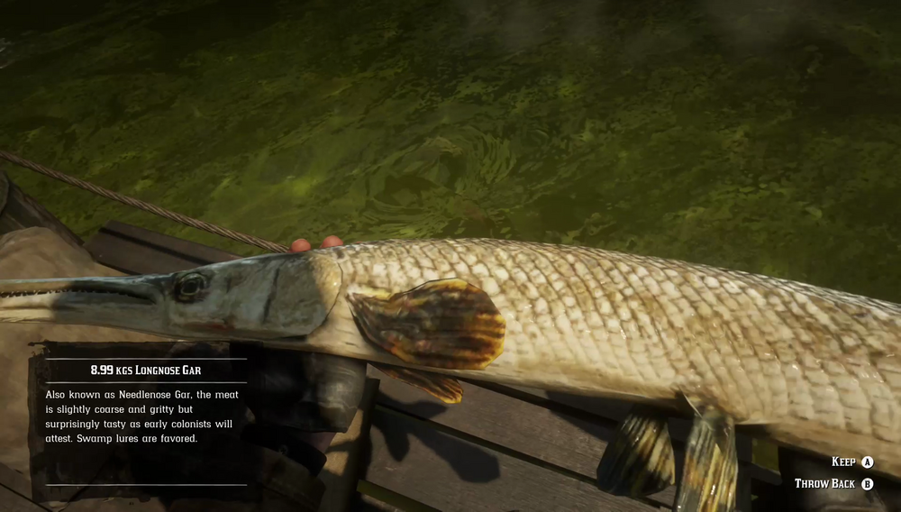

Longnose Gar are large, long, thin swamp dwellers. The Longnose Gar's habitat is restricted to a few spots in the Lemoyne. It eschews natural baits in favor of Swamp Lures. Longnose Gar are noted to be more active in overcast weather. Bluewater Marsh locals tell of a Legendary Longnose Gar lurking somewhere in the shady bayou.
Swamps, Bayou Nwa.
